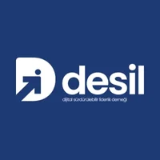
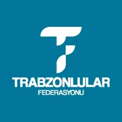
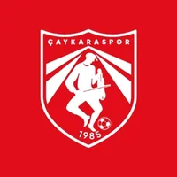
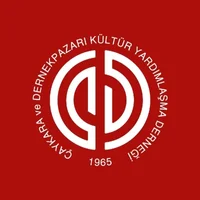
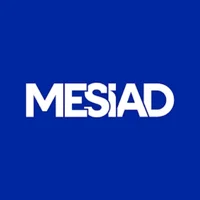
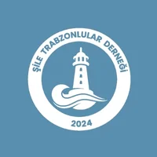

Girişimci · Proje Yöneticisi · İletişimci
Yasin Yavuz
Girişimcilik, Dijital Projeler ve Sosyal Etki Odaklı Bir Yolculuk
Öne Çıkanlar
Hakkında
1991 doğumlu, aslen Trabzon’un Çaykara ilçesine mensup olan Yasin Yavuz; marka yönetimi, kurumsal iletişim, dijital medya, yazılım projeleri ve organizasyon yönetimi alanlarında çok disiplinli bir kariyere sahip bir iletişim ve proje yöneticisidir.
2015 yılından bu yana kurucusu olduğu Gavia Works çatısı altında yazılım ve dijital dönüşüm süreçlerini yürütmekte; 2016’dan itibaren Dada İstanbul’un Ajans Başkanı olarak marka, iletişim ve yaratıcı projelere liderlik etmektedir.
Sivil toplum alanında Dijital Sürdürülebilir Liderlik Derneği (DESİL)’nin kurucu başkanıdır. Çalışmalarını; vatan, millet ve manevi değerlere bağlılığı, etik duruş ve sürdürülebilirlik anlayışıyla bütünleştirir.
Roller
- Gavia WorksKurucu · 2015
- Dada İstanbulAjans Başkanı · 2016
- Milli MüdafaaYayın Yönetmeni
- ÇaykarasporMedya & Kurumsal İletişim Direktörü · 2024
- DESİLKurucu Başkan · 2024
İş Dünyası & STK
Kurduğu ve yönettiği şirketler, markalar ve uzmanlıklar
Yazılımdan reklam ajansına, savunma medyasından tasarım atölyesine uzanan bir üretim ağı.


Uzmanlık Alanları
- / 01Marka & Kurumsal İletişim
- / 02Dijital Medya & İçerik Stratejisi
- / 03Web & Yazılım Projeleri
- / 04UI / UX & Dijital Deneyim
- / 05Dijital Pazarlama & SEO
- / 06Organizasyon & Proje Yönetimi
Dernek & STK Görevleri

Dijital Sürdürülebilir Liderlik Derneği Kurucu Başkan · 2024
Trabzonlular Federasyonu Yönetim Kurulu Üyesi · 2025
Çaykaraspor Medya & Kurumsal İletişim Direktörü · 2024
Çaykara ve Dernekpazarı Kültür Yardımlaşma Derneği YK Yedek Üyesi
Merter Sanayici ve İşadamları Derneği Üye
Şile Trabzonlular Derneği Kurucu Başkan · 2024Öne Çıkan Projeler
Kültürel mirası dijital çağla buluşturan çalışmalar
Çaykara Bağımlılıkla Mücadele ve Önleyici Farkındalık Programı
Dijital Kültür Köprüsü – Bosna Hersek | Gençler İçin Dijital Kültürel Miras
Köklü Miras | Anadolu’nun Sözlü Kültürünü Geleceğe Taşıyan Belgesel
Selatin Camilerde Dijital Duyuru Pano Uygulaması
Medya
Basında ve gündemde
Çaykaraspor’un 40. Yıl Vefa Gecesinde Yasin Yavuz’a Plaket
DESİL ile Uluslararası Dijital Girişimcilik Derneği Arasında İş Birliği
Yasin Yavuz’dan Dr. Ercan Varlıbaş’a Ziyaret
DESİL Yönetim Kurulu 2026’nın İlk Toplantısını Gerçekleştirdi
Uzungöl Kış Festivali İçin Ortak Akıl Buluşması Gerçekleştirildi
Vefa Gecesinde Tarih ve Teknoloji Buluştu: “1918: Kurtuluş” Kısa Filmi
İletişim